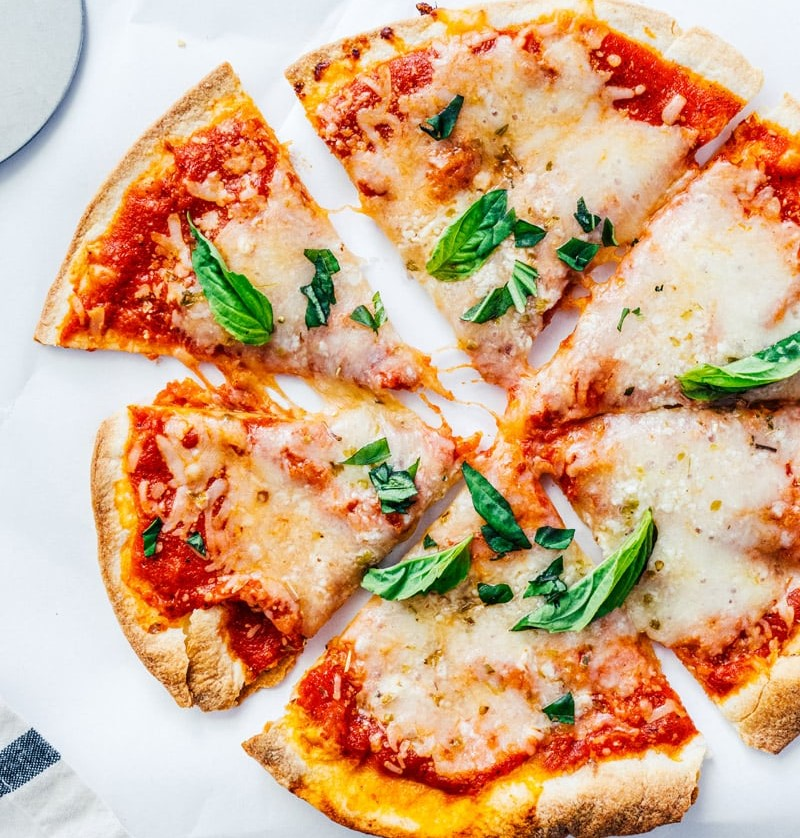

Tortilla margherita pizza topped with cheese, tomato and basil leaves
Perfect when you are in a hurry or just too tired to cook! Serves one person or you can make other flavors and share!
The recipe is very simple and quick to prepare. Packed with protein and health carbs.
You can use your creativite and also inspiration from existing pizza flavor!
It will have less calories than an original pizza but with so much flavor!
Ingredients
1 Olé extreme keto tortilla (Only 60 calories per tortilla and packed with fibers!)
2 tablespoons - Tomato sauce
28g - Fat free mozzarella
40g - Cottage cheese
1 tomato sliced
Basil leaves
Steps
Heat up your airfryer or oven at 350F.
Spread the tomato sauce on the tortilla
Top with cheese and cottage cheese
Add the sliced tomatos (I like to season it with salt and pepper)
Add the basil on top of the tomatos
Bake for 10min or when cheese is melted and golden. Don't over bake because it can make it too dry. Enjoy!